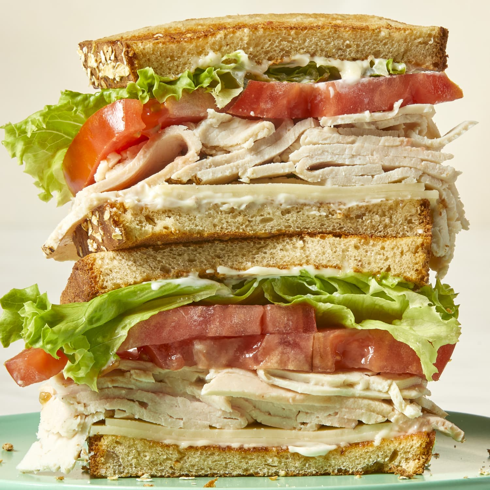

Turkey Sandwich

Description
A turkey sandwich is a classic and versatile lunch or snack. It typically features slices of turkey on bread, with various toppings like lettuce, tomato, cheese, and condiments.
Ingredients
- Bread (multiple kinds will do)
- Sliced turkey
- Sliced Cheese
- Lettuce
- Sliced Tomato
- Mayonaise
- Mustard
- Salt
- Pepper
Steps
- Toast two peices of bread
- Cover one side of each slice of bread with mayonaise
- Place a layer of mustard on one or both slices of bread
- Lay the turkey onto the bottom peice of bread
- Lay cheese on top of the turkey
- Lay sliced tomatoe and lettuce on top of the cheese
- Salt and pepper to taste